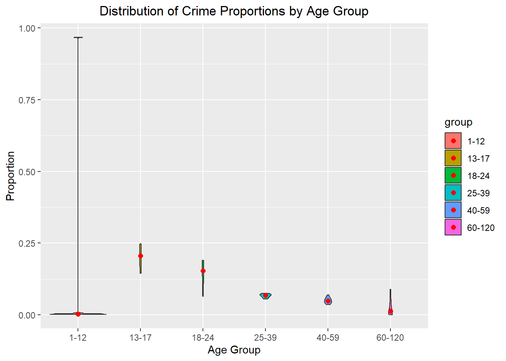

# Libraries
library(tidyverse)
library(lubridate)Los Angeles Crime Visualized
R
Visualization
Visualization of crime in LA with R and ggplot2.
The data in this notebook was taken from https://data.lacity.org/Public-Safety/Crime-Data-from-2020-to-Present/2nrs-mtv8 and consists of crime data from Los Angeles, CA (2020-2024).
All visualizations, statistics, and insights discussed are based on this dataset and time frame mentioned above only. The objective is to gain a comprehensive understanding of crime in Los Angeles through data exploration and visualization.
The source code button above shows when I uploaded the data to GitHub in 2023, but as of 2024 this is the more updated version.
Loading Libraries
Exploratory Data Analysis
# Importing dataset
crime <- read.csv("crime.csv")
head(crime) DR_NO Date.Rptd DATE.OCC TIME.OCC AREA
1 190326475 03/01/2020 12:00:00 AM 03/01/2020 12:00:00 AM 2130 7
2 200106753 02/09/2020 12:00:00 AM 02/08/2020 12:00:00 AM 1800 1
3 200320258 11/11/2020 12:00:00 AM 11/04/2020 12:00:00 AM 1700 3
4 200907217 05/10/2023 12:00:00 AM 03/10/2020 12:00:00 AM 2037 9
5 220614831 08/18/2022 12:00:00 AM 08/17/2020 12:00:00 AM 1200 6
6 231808869 04/04/2023 12:00:00 AM 12/01/2020 12:00:00 AM 2300 18
AREA.NAME Rpt.Dist.No Part.1.2 Crm.Cd
1 Wilshire 784 1 510
2 Central 182 1 330
3 Southwest 356 1 480
4 Van Nuys 964 1 343
5 Hollywood 666 2 354
6 Southeast 1826 2 354
Crm.Cd.Desc Mocodes Vict.Age
1 VEHICLE - STOLEN 0
2 BURGLARY FROM VEHICLE 1822 1402 0344 47
3 BIKE - STOLEN 0344 1251 19
4 SHOPLIFTING-GRAND THEFT ($950.01 & OVER) 0325 1501 19
5 THEFT OF IDENTITY 1822 1501 0930 2004 28
6 THEFT OF IDENTITY 1822 0100 0930 0929 41
Vict.Sex Vict.Descent Premis.Cd Premis.Desc
1 M O 101 STREET
2 M O 128 BUS STOP/LAYOVER (ALSO QUERY 124)
3 X X 502 MULTI-UNIT DWELLING (APARTMENT, DUPLEX, ETC)
4 M O 405 CLOTHING STORE
5 M H 102 SIDEWALK
6 M H 501 SINGLE FAMILY DWELLING
Weapon.Used.Cd Weapon.Desc Status Status.Desc Crm.Cd.1 Crm.Cd.2 Crm.Cd.3
1 NA AA Adult Arrest 510 998 NA
2 NA IC Invest Cont 330 998 NA
3 NA IC Invest Cont 480 NA NA
4 NA IC Invest Cont 343 NA NA
5 NA IC Invest Cont 354 NA NA
6 NA IC Invest Cont 354 NA NA
Crm.Cd.4 LOCATION Cross.Street LAT
1 NA 1900 S LONGWOOD AV 34.0375
2 NA 1000 S FLOWER ST 34.0444
3 NA 1400 W 37TH ST 34.0210
4 NA 14000 RIVERSIDE DR 34.1576
5 NA 1900 TRANSIENT 34.0944
6 NA 9900 COMPTON AV 33.9467
LON
1 -118.3506
2 -118.2628
3 -118.3002
4 -118.4387
5 -118.3277
6 -118.2463# Changing Date.Rptd and DATE.OCC to date format
crime$Date.Rptd <- as.Date(crime$Date.Rptd, format = "%m/%d/%Y")
crime$DATE.OCC <- as.Date(crime$DATE.OCC, format = "%m/%d/%Y")
times_char <- sprintf("%04d", crime$TIME.OCC)
datetime <- strptime(times_char, format = "%H%M")
crime$TIME.OCC <- format(datetime, format = "%H:%M")
head(crime) DR_NO Date.Rptd DATE.OCC TIME.OCC AREA AREA.NAME Rpt.Dist.No Part.1.2
1 190326475 2020-03-01 2020-03-01 21:30 7 Wilshire 784 1
2 200106753 2020-02-09 2020-02-08 18:00 1 Central 182 1
3 200320258 2020-11-11 2020-11-04 17:00 3 Southwest 356 1
4 200907217 2023-05-10 2020-03-10 20:37 9 Van Nuys 964 1
5 220614831 2022-08-18 2020-08-17 12:00 6 Hollywood 666 2
6 231808869 2023-04-04 2020-12-01 23:00 18 Southeast 1826 2
Crm.Cd Crm.Cd.Desc Mocodes Vict.Age
1 510 VEHICLE - STOLEN 0
2 330 BURGLARY FROM VEHICLE 1822 1402 0344 47
3 480 BIKE - STOLEN 0344 1251 19
4 343 SHOPLIFTING-GRAND THEFT ($950.01 & OVER) 0325 1501 19
5 354 THEFT OF IDENTITY 1822 1501 0930 2004 28
6 354 THEFT OF IDENTITY 1822 0100 0930 0929 41
Vict.Sex Vict.Descent Premis.Cd Premis.Desc
1 M O 101 STREET
2 M O 128 BUS STOP/LAYOVER (ALSO QUERY 124)
3 X X 502 MULTI-UNIT DWELLING (APARTMENT, DUPLEX, ETC)
4 M O 405 CLOTHING STORE
5 M H 102 SIDEWALK
6 M H 501 SINGLE FAMILY DWELLING
Weapon.Used.Cd Weapon.Desc Status Status.Desc Crm.Cd.1 Crm.Cd.2 Crm.Cd.3
1 NA AA Adult Arrest 510 998 NA
2 NA IC Invest Cont 330 998 NA
3 NA IC Invest Cont 480 NA NA
4 NA IC Invest Cont 343 NA NA
5 NA IC Invest Cont 354 NA NA
6 NA IC Invest Cont 354 NA NA
Crm.Cd.4 LOCATION Cross.Street LAT
1 NA 1900 S LONGWOOD AV 34.0375
2 NA 1000 S FLOWER ST 34.0444
3 NA 1400 W 37TH ST 34.0210
4 NA 14000 RIVERSIDE DR 34.1576
5 NA 1900 TRANSIENT 34.0944
6 NA 9900 COMPTON AV 33.9467
LON
1 -118.3506
2 -118.2628
3 -118.3002
4 -118.4387
5 -118.3277
6 -118.2463# Finding dimension of crime dataset
dim(crime)[1] 959241 28This dataset has 959,241 rows and 28 columns.
# Applying NA function to each column
crime_is_na <- sapply(crime, function(x) sum(is.na(x)))
crime_is_na[which(crime_is_na > 0)] Premis.Cd Weapon.Used.Cd Crm.Cd.1 Crm.Cd.2 Crm.Cd.3
13 634058 11 890716 956944
Crm.Cd.4
959177 Premis.Cd has some missing values. Weapon.Used.Cd has so many missing values because not all recorded crimes involve a weapon, and Crm.Cd.2-4 have many missing values because they will only have a value if more than 1 crime was committed in the same instance. I will not be removing any rows that contain missing values because if I do, there will not be nearly as much data. As a result, I will account for missing values during statistical tests.
What are the different types of crimes recorded?
# Finding length of crime list
length(table(crime$Crm.Cd.Desc))[1] 139There are 139 different types of crimes that have been committed.
# Sorting the number of occurrences for each crime
sorted_crimes <- table(crime$Crm.Cd.Desc) %>% sort(decreasing = TRUE)There are too many crimes to print out the name of each one, but if you’d like you can download this rmd and print the sorted_crimes variable.
head(sorted_crimes)
VEHICLE - STOLEN
105537
BATTERY - SIMPLE ASSAULT
74596
BURGLARY FROM VEHICLE
59476
THEFT OF IDENTITY
59327
VANDALISM - FELONY ($400 & OVER, ALL CHURCH VANDALISMS)
58180
BURGLARY
57597 Here are the 5 highest occurring crimes.
tail(sorted_crimes)
INCEST (SEXUAL ACTS BETWEEN BLOOD RELATIVES)
6
THEFT, COIN MACHINE - ATTEMPT
6
FIREARMS EMERGENCY PROTECTIVE ORDER (FIREARMS EPO)
5
DISHONEST EMPLOYEE ATTEMPTED THEFT
4
FIREARMS RESTRAINING ORDER (FIREARMS RO)
4
TRAIN WRECKING
1 Here are the 5 lowest occurring crimes.
How many of the crimes were only attempted?
# Finding number of crimes with "ATTEMPT" in title
sum(grepl("ATTEMPT", crime$Crm.Cd.Desc, ignore.case = TRUE))[1] 15716Out of all the crimes committed, 15,716 of them were attempts.
How many crimes involved stolen property?
# Finding number of crimes with "STOLEN" in title
sum(grepl("STOLEN", crime$Crm.Cd.Desc, ignore.case = TRUE))[1] 122940Out of all the crimes committed, 122,940 of them involved stolen property.
Which days had the most amount of crime? The least?
# Sorting dates of crimes based on how many occurred that day
date_occ_counts <- crime %>% count(DATE.OCC) %>% arrange(desc(n))head(date_occ_counts) DATE.OCC n
1 2020-01-01 1149
2 2023-01-01 1137
3 2022-12-02 1132
4 2023-02-01 1090
5 2022-10-01 1077
6 2022-12-01 1056The date with the most amount of crime is 01/01/2020 with 1149 instances.
tail(date_occ_counts) DATE.OCC n
1646 2024-07-03 189
1647 2024-07-05 172
1648 2024-07-04 171
1649 2024-07-06 170
1650 2024-07-07 121
1651 2024-07-08 48The date with the least amount of crime is 07/08/2024 with 48 instances.
Graphing the Data and Conducting Statistical Analysis
Which areas had the most amount of crime? The least?
area_name_counts <- crime %>% count(AREA.NAME) %>% arrange(desc(n))ggplot(head(area_name_counts, 7), aes(x = fct_inorder(AREA.NAME), y = n, fill = fct_inorder(AREA.NAME))) +
geom_bar(stat = "identity") +
geom_text(aes(label = n), vjust = -0.5) +
labs(x = "Area", y = "# of Crimes Comitted", title = "Areas with the Highest Number of Crimes Comitted") +
theme(plot.title = element_text(hjust = 0.5), legend.position = "none") +
scale_y_continuous(limits = c(0, 60000))The area with the highest amount of crime is77th Street with 59,889 reported cases.
ggplot(tail(area_name_counts, 7), aes(x = fct_inorder(AREA.NAME), y = n, fill = fct_inorder(AREA.NAME))) +
geom_bar(stat = "identity") +
geom_text(aes(label = n), vjust = -0.5) +
labs(x = "Area", y = "# of Crimes Comitted", title = "Areas with the Lowest Number of Crimes Comitted") +
theme(plot.title = element_text(hjust = 0.5), legend.position = "none") +
scale_y_continuous(limits = c(0, 40000))The area with the lowest amount of crime is Foothill with 31,928 reported cases.
What premise had a crime occur the most? The least?
premise_counts <- crime %>% count(Premis.Desc) %>% arrange(desc(n))ggplot(head(premise_counts, 7), aes(x = fct_inorder(Premis.Desc), y = n, fill = fct_inorder(Premis.Desc))) +
geom_bar(stat = "identity") +
geom_text(aes(label = n), vjust = -0.5, size = 3) +
labs(x = "Premise", y = "# of Crimes", title = "Premise Where Crime Occured the Most") +
theme(plot.title = element_text(hjust = 0.5), axis.text.x = element_blank(), axis.ticks.x = element_blank()) +
scale_y_continuous(limits = c(0, 220000)) +
guides(fill = guide_legend(title = "Legend"))The premise where the most crime occurs are single family dwellings.
ggplot(tail(premise_counts, 7), aes(x = fct_inorder(Premis.Desc), y = n, fill = fct_inorder(Premis.Desc))) +
geom_bar(stat = "identity") +
geom_text(aes(label = n), vjust = -0.5, size = 3) +
labs(x = "Premise", y = "# of Crimes", title = "Premise Where Crime Occured the Least") +
theme(plot.title = element_text(hjust = 0.5), axis.text.x = element_blank(), axis.ticks.x = element_blank()) +
scale_y_continuous(limits = c(0, 2.2)) +
guides(fill = guide_legend(title = "Legend"))The premise where the least crime occurs are trams/streetcars.
Show the number of crimes commited per age of victim
crime_per_age <- table(crime$Vict.Age)[5:103] %>% as.data.frame()ggplot(crime_per_age, aes(x = Var1, y = Freq, fill = Var1)) +
geom_bar(stat = "identity") +
labs(x = "Age of Victim", y = "# of Crimes", title = "Number of Crimes per Victim Age") +
theme(plot.title = element_text(hjust = 0.5), axis.text.x = element_text(angle = 90, vjust = 0.5, hjust = 1, size = 5), legend.position = "none")We can see most victims are aged 19-50, where more children and elderly people are less victimized.
# Creating age groups
crime_per_age$group <- cut(as.numeric(crime_per_age$Var1), breaks = c(0, 12, 17, 24, 39, 59, 120), labels = c("1-12", "13-17", "18-24", "25-39", "40-59", "60-120"))
# Finding age group proportions
crime_per_age <- crime_per_age %>% group_by(group) %>% mutate(Proportion = Freq / sum(Freq))ggplot(crime_per_age, aes(x = group, y = Proportion, fill = group)) +
geom_violin() +
stat_summary(fun = median, geom="point", size=2, color="red") +
labs(x = "Age Group", y = "Proportion", title = "Distribution of Crime Proportions by Age Group") +
theme(plot.title = element_text(hjust = 0.5))
From the violin chart, we can see the age group with the highest number of victims is 13-17. The red dots, representing the median, show the 13-17 age group takes up about 20% of the data. The lowest proportion group is the 60-120 year old group, likely due to the older individuals having less chance to become victim of a crime and it is skewed.
ggplot(crime[crime$Vict.Age > 0,], aes(x = Vict.Age)) +
geom_boxplot(fill = "green") +
labs(x = "Age", title = "Victim Age") +
theme(plot.title = element_text(hjust = 0.5))Median age of victim seems to be around 37 years old with an IQR of approximately 28-50 years old.
How many crimes occured with a weapon or force?
# Finding number of crimes committed with a weapon
crime_weapon_na_count <- sum(is.na(crime$Weapon.Used.Cd))
crime_weapon_count <- 788767 - crime_weapon_na_count
weapons <- data.frame(
Weapon = c("Yes", "No"),
cc = c(crime_weapon_count, crime_weapon_na_count)
)ggplot(weapons, aes(x = Weapon, y = cc, fill = Weapon)) +
geom_bar(stat = "identity") +
labs(x = "Weapon", y = "Counts", title = "How Many Crimes Were Committed With A Weapon?") +
theme(plot.title = element_text(hjust = 0.5)) +
scale_y_continuous(labels = scales::comma)We can see there’s less crimes committed with a weapon than without one, more than a third less.
Is there a difference in the proportion of women who are victim of a crime to men?
male_victims <- subset(crime, Vict.Sex == "M")
female_victims <- subset(crime, Vict.Sex == "F")
prop.test(
x = c(nrow(female_victims), nrow(male_victims)),
n = c(788767,788767)
)
2-sample test for equality of proportions with continuity correction
data: c(nrow(female_victims), nrow(male_victims)) out of c(788767, 788767)
X-squared = 4590.5, df = 1, p-value < 2.2e-16
alternative hypothesis: two.sided
95 percent confidence interval:
-0.05538834 -0.05227591
sample estimates:
prop 1 prop 2
0.4407461 0.4945782 With a p-value close to 0 and an alpha level of 0.05, we can reject the null hypothesis and state that the true proportion of victims of a crime who are woman or who are men are different.
Are woman victims of certain crimes more often than men?
gender_crime <- subset(crime, Vict.Sex == "M" | Vict.Sex == "F")
# Using Chi-Square test of Independence
chisq.test(table(gender_crime$Vict.Sex, gender_crime$Crm.Cd.Desc))
Pearson's Chi-squared test
data: table(gender_crime$Vict.Sex, gender_crime$Crm.Cd.Desc)
X-squared = 75535, df = 136, p-value < 2.2e-16With a p-value close to 0 and an alpha level of 0.05, we can reject the null hypothesis, indicating a statistically significant association between gender and crime type on an individual.
What premise had the most vandalisms? The least?
# Counting number of vandalism reports at each premise
premise_vandalisms <- crime %>% filter(grepl("VANDALISM", Crm.Cd.Desc, ignore.case = TRUE)) %>% group_by(Premis.Desc) %>% summarize(Count = n()) %>% arrange(desc(Count))ggplot(head(premise_vandalisms, 10), aes(x = fct_inorder(Premis.Desc), y = Count)) +
geom_segment(aes(x = fct_inorder(Premis.Desc), xend = Premis.Desc, y = 0, yend = Count)) +
geom_point(color = "orange", size = 4) +
coord_flip() +
labs(x = "Premise", y = "Count", title = "Most # of Vandalisms at Premises in LA") +
theme_light() +
theme(axis.text.y = element_text(size = 6), plot.title = element_text(hjust = 0.5),
panel.grid.major.x = element_blank(), panel.border = element_blank(),
plot.margin = margin(c(10,20,10,10), unit = "pt")
)The premise with the highest number of reported vandalism are vehicles (passenger/trucks).
ggplot(tail(premise_vandalisms, 10), aes(x = fct_inorder(Premis.Desc), y = Count)) +
geom_segment(aes(x = fct_inorder(Premis.Desc), xend = Premis.Desc, y = 0, yend = Count)) +
geom_point(color = "orange", size = 4) +
coord_flip() +
labs(x = "Premise", y = "Count", title = "Most # of Vandalisms at Premises in LA") +
theme_light() +
theme(axis.text.y = element_text(size = 6), plot.title = element_text(hjust = 0.5),
panel.grid.major.x = element_blank(), panel.border = element_blank(),
plot.margin = margin(c(10,20,10,10), unit = "pt")
)
Some MTA lines have the lowest number of vandalisms, with only 1 recorded, as well as a skating rink and tool shed having only 1 instance. In fact, there’s many more which only have 1 reported vandalism.
What percent of crimes are still being investigated?
sum(grepl("Cont", crime$Status.Desc, ignore.case = TRUE)) / nrow(crime)[1] 0.797999779.80% of crimes are still being investigated.
Are certain ethnic groups victims of crimes more often than others?
descent_table <- table(crime$Vict.Descent)[3:21]
prob = rep(1/length(descent_table), length(descent_table))
chisq.test(descent_table, p = prob)
Chi-squared test for given probabilities
data: descent_table
X-squared = 2713681, df = 18, p-value < 2.2e-16With a p-value is close to 0, and alpha = 0.5, we can reject the null and state that ethnic groups are not equally as likely to be targeted for a crime.
Are there any seasons where crime is more frequent? Less frequent?
# Grouping the date and number of crimes
daily_crime <- crime %>% group_by(DATE.OCC) %>% summarize(Count = n()) ggplot(daily_crime, aes(x = DATE.OCC, y = Count)) +
geom_line() +
facet_wrap(~ year(DATE.OCC), ncol = 3, nrow = 2, scales = "free") +
labs(x = "Time", title = "Crime over Time") +
theme(plot.title = element_text(hjust = 0.5)) +
scale_x_date(date_breaks = "1 month", date_labels = "%b")It seems like the beginning of each month there’s a spike in crime where the biggest spike is in January.
Is there a certain month that has more crime yearly than others?
If we take a look at crime from the graph above, we can see that there’s not really a specific month that generally has more or less crime than others.
Has crime increased over time in any area?
# Grouping the top 12 areas by date and number of crimes
selected <- area_name_counts[1:12,1]
filtered_crime <- crime %>% filter(AREA.NAME %in% selected)
crime_time_area <- filtered_crime %>% group_by(DATE.OCC, AREA.NAME) %>% summarize(Count = n()) ggplot(crime_time_area, aes(x = DATE.OCC, y = Count)) +
geom_line() +
facet_wrap(~ AREA.NAME, scales = "free") +
labs(x = "Time", title = "Crime over Time") +
theme(plot.title = element_text(hjust = 0.5)) +
stat_smooth(method = "lm")No area seems to have a significant increase in crime over time, but some areas like Central, Newton, Olympic, Pacific, and West LA do have some increase in crime. The areas all seem to have some major spikes in crime on certain days, but nothing that overlaps with each other.
Are there certain times of the day where crime occurs more? What about day vs night?
# Convert military time to hours and minutes
hours <- as.numeric(substr(crime$TIME.OCC, 1, 2))
minutes <- as.numeric(substr(crime$TIME.OCC, 4, 5))
# Calculate the intervals
interval <- sprintf("%02d:%02d", floor((hours * 60 + minutes) %/% 30 / 2), ((hours * 60 + minutes) %/% 30 %% 2) * 30)
interval_df <- as.data.frame(table(interval))
number_of_bar <- nrow(interval_df)
angle <- 90 - 360 * (as.numeric(interval_df$interval) - 0.5) / number_of_bar
interval_df$angle<-ifelse(angle < -90, angle + 180, angle)# Plot of crime frequency per 30 minutes
ggplot(interval_df, aes(x = as.factor(interval), y = Freq, fill = Freq)) +
geom_bar(stat = "identity", alpha = 0.7) +
geom_text(aes(x = interval, y = Freq, label = interval, hjust = 0),
color = "black", fontface = "bold", alpha = 0.6, size = 2, angle = angle,
inherit.aes = FALSE) +
scale_fill_gradient(low = "green", high = "red") +
theme_minimal() +
theme(
axis.text = element_blank(),
panel.grid = element_blank(),
axis.title = element_blank(),
plot.margin = unit(rep(-0.5, 4), "cm")
) +
coord_polar(start = 0) +
scale_y_continuous(limits = c(-30000, 40000))We can see that as the time of day increases, the frequency of crime increases, but there is a major spike at noon (12:00).
If you’ve made it to the end thank you! I am trying to upload projects using Quarto and I’m still getting used to everything, so I hope to make this prettier eventually!